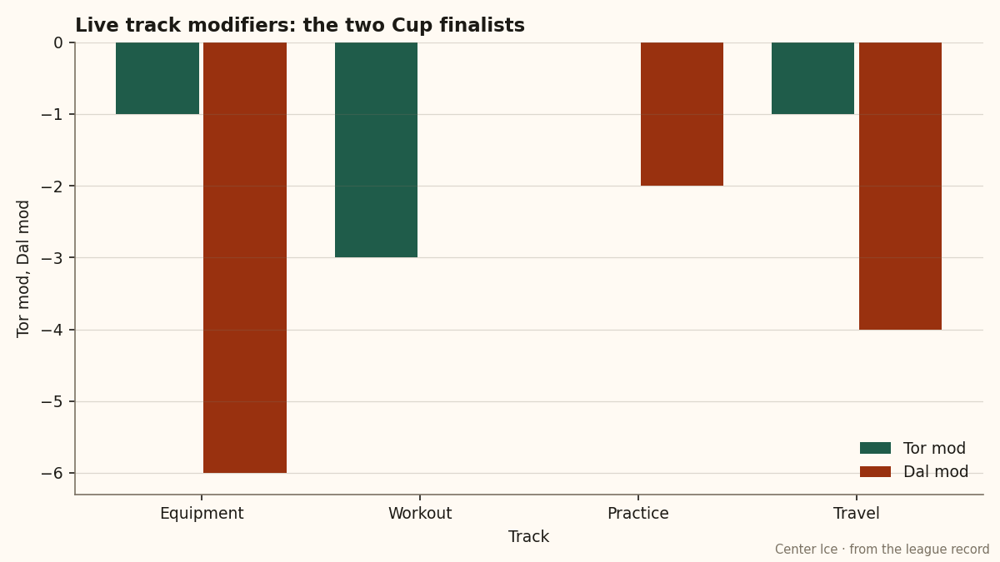

The Cup Final: One Club Owns the Only Level 4, and the Floor on Another Track
Dallas runs a workout room no other club reaches and an equipment room eleven others share. Toronto runs the smallest building penalty in the league. Both clubs are in the Final.
 Ruth HalloranBusiness of hockey · The Building
Ruth HalloranBusiness of hockey · The Building
The Stanley Cup Final is 1-0  Toronto Maple Leafs heading into game 2 on Sunday at
Toronto Maple Leafs heading into game 2 on Sunday at  Dallas Stars. The two finalists spent different money and built different rooms. Both are still here.
Dallas Stars. The two finalists spent different money and built different rooms. Both are still here.
What the building shows
Dallas Stars carries a workout room at level 4. No other club in the league has level 4 on that track. The modifier reads +0, the highest available without exceeding par. Equipment at Dallas Stars sits at level 0, a -6. Eleven other clubs share that floor:  New York Islanders,
New York Islanders,  Carolina Hurricanes,
Carolina Hurricanes,  Pittsburgh Penguins,
Pittsburgh Penguins,  Ottawa Senators,
Ottawa Senators,  Atlanta Thrashers,
Atlanta Thrashers,  Boston Bruins,
Boston Bruins,  Chicago Blackhawks,
Chicago Blackhawks,  Mighty Ducks of Anaheim,
Mighty Ducks of Anaheim,  Columbus Blue Jackets,
Columbus Blue Jackets,  Florida Panthers,
Florida Panthers,  Minnesota Wild.
Minnesota Wild.
Toronto Maple Leafs runs equipment at level 3 (-1), workout at level 2 (-3), practice at level 4 (+0), travel at level 3 (-1). Its live sum is -5, the smallest penalty in the league. Dallas Stars runs at -12.

The travel modifier is the one that applies on the road. Dallas Stars sits at level 1 (-4). The Stars went 21-20 away this season. Toronto Maple Leafs runs travel at level 3 (-1) and went 31-10 on the road. The gap on the road is 10 wins. Whether that traces to the travel budget alone, the room cannot tell you.
The gate and the profit line
Toronto Maple Leafs sells the most expensive seat in the league at $107. Dallas Stars sells at $80. The gap is $27 per head. Toronto draws 17,713 to Dallas' 16,067, and the revenue line follows: $121.34M for Toronto, $99.32M for Dallas.
| Toronto Maple Leafs | Dallas Stars | |
|---|---|---|
| Payroll | $60.04M | $67.99M |
| Per point | $0.45M | $0.62M |
| Revenue | $121.34M | $99.32M |
| Profit | $48.88M | $22.87M |
| Attendance | 17,713 | 16,067 |
| Ticket | $107 | $80 |
| Live sum | -5 | -12 |
| Pts | 133 | 109 |
Toronto Maple Leafs posts the highest profit in the league at $48.88M. Dallas turns $22.87M. Both clubs cleared seven figures on the profit line. The per-point cost, computed from the save: $0.45M for Toronto, $0.62M for Dallas.
Two paths to the same bracket
Dallas Stars carries the 4th-highest payroll in the league at $67.99M. Toronto Maple Leafs carries the 6th at $60.04M. The Stars reach the Final spending more on players. Toronto reaches it spending more on the building, or rather spending more on a building that already runs near par.
Dallas Stars upgraded its workout room between May 13 and May 15 of this year. That is the most recent upgrade on record for either finalist. Toronto Maple Leafs last upgraded its workout room between April 7 and April 9, and its travel room between December 28 and December 29 of 2004.
Toronto Maple Leafs is 13-7 with a 1.88 GAA and 2 shutouts from  Roberto Luongo97 [593]. Dallas Stars is 12-4 with a 1.51 GAA from
Roberto Luongo97 [593]. Dallas Stars is 12-4 with a 1.51 GAA from  Marty Turco95 [1018]. Dallas' goaltending has held through 16 games; Toronto has played 20.
Marty Turco95 [1018]. Dallas' goaltending has held through 16 games; Toronto has played 20.
The building did not pick the bracket. The standings did: 133 points to 109.